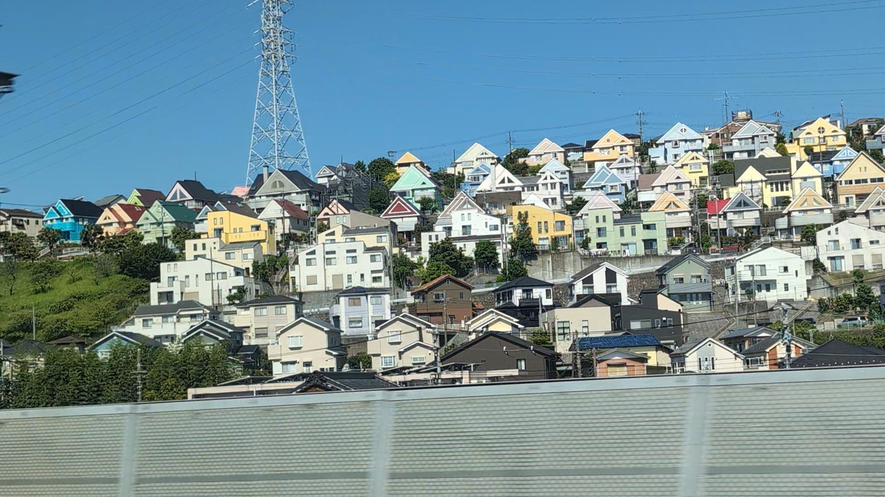
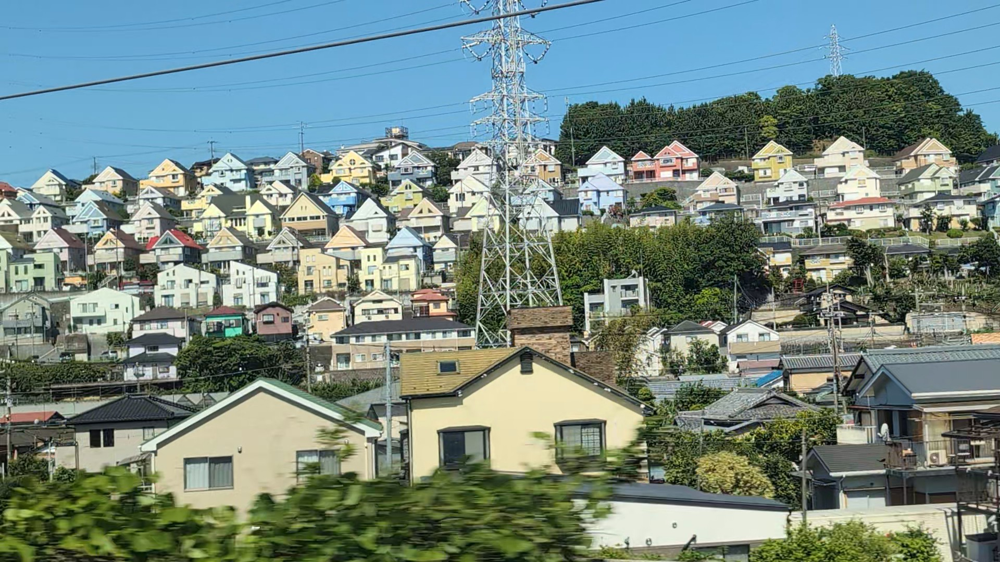

TOKAIDO SHINKANSEN WINDOW VIEW
日向岡の街並みはいつ見える？座席側は？
斜面いっぱいに、おなじ屋根がならぶ。

- 見える区間
- 新横浜 → 小田原
- 座席側
- E席・山側
- タイミング
- 東京発のぞみ基準で約27分後
- 写真
- 2 枚
地図でみる
地図を開くと OpenStreetMap に接続します。
日向岡の街並みの見つけ方
相模川を渡ってしばらくすると、丘の斜面にそろって並ぶ住宅地が一瞬あらわれます。名所ではありません。でも、知っている人だけが「あ、来た」と窓の外を見る——そういう車窓です。
東京から新大阪方面へ向かう場合は、新横浜 → 小田原が近づいたらE席・山側の窓を少し早めに見てください。新大阪から東京方面へ向かう場合は、通過順が逆になります。
東海道新幹線の車窓としてのポイント
日向岡の街並みは、富士山だけではない東海道新幹線の車窓を楽しむための見どころです。列車の速度が速いため、見える時間は短く、天気や座席位置によって見え方が変わります。
写真で見る日向岡の街並み
